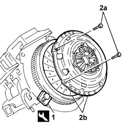
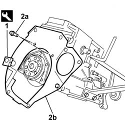
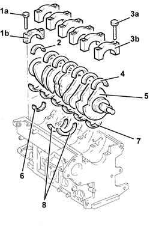
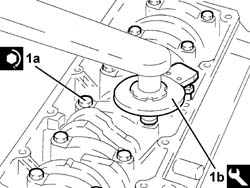
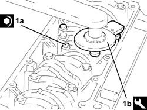
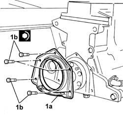
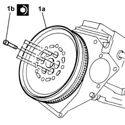
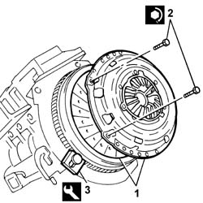

1024A10 CRANKSHAFT - R.R WITH ENGINE REMOVED - CHECK AND, IF NECESSARY, REPLACE MAIN JOURNALS AND CRANKPINS
- Path
- Procedures > 10 ENGINE > 1024 CRANKSHAFT AND FLYWHEEL > 1024A CRANKSHAFT > 1024A10 CRANKSHAFT - R.R WITH ENGINE REMOVED - CHECK AND, IF NECESSARY, REPLACE MAIN JOURNALS AND CRANKPINS
- Kind
- repair procedure (removal / refitting; the operation number is the code)
- Applies to
- all engines; all production periods
- Interactive page
- https://sloeber94.github.io/elrnDB-fCrm/en/#/194002138
Applies to: engines: 1.8, 2.2; all production periods
- Refer to:
Applies to: engines: 2.4 JTD 20v; all production periods
 Removing
Removing
 Refitting
RefittingOp. 1020D17 FRONT CRANKSHAFT OIL SEAL COVER - R.R AND REPLACE SEALS FOR VERSIONS WITH OIL PUMP ON CRANKSHAFT, TIMING SIDE AND HEAT EXCHANGER WITH ENGINE REMOVED
1. Fit the flywheel lock.
Description | Code | Function | |
|---|---|---|---|
1 | Flywheel lock | 1.860.846.001 | Prevent the rotation of the crankshaft |
2. Undo the fixing bolts (2a) and remove the clutch assembly (2b).

Applies to: engines: 2.4 JTD 20v; all production periods
1. Undo retaining bolts (1a) and remove flywheel (1b).

Applies to: engines: 2.4 JTD 20v; all production periods
1. Remove the flywheel lock.
Description | Code | Function | |
|---|---|---|---|
1 | Flywheel lock | 1.860.846.001 | Prevent the rotation of the crankshaft |
2. Undo the fixing bolts (2a) and remove the engine flywheel protection (2b).

Applies to: engines: 2.4 JTD 20v; all production periods
1. Undo the fixing bolts (1a) and remove the crankshaft rear oil seal cover (1b).
Fit the tool.
Description | Code | Function | |
|---|---|---|---|
. | Flange | 1.860.815.000 | Crankshaft rotation |

Applies to: engines: 2.4 JTD 20v; all production periods
Rotate the crankshaft using the tool fitted previously until the cylinder concerned is at B.D.C.
1. Undo the bolts (1a) and remove the connecting rod cap (1b).
2. Remove the lower connecting rod half-bearing.
Carry out the same operations to remove the connecting rod caps and half-bearings for the remaining cylinders.
3. Undo the bolts (3a) and remove the connecting rod caps (2b).
4. Remove the lower main journal half-bearings.
5. Remove the crankshaft.
6. Remove the upper connecting rod half-bearings.
7. Remove the upper main journal half-bearings.
8. Remove the thrust washers from the 4th main journal.

Applies to: engines: 2.4 JTD 20v; all production periods
Refitting
RemovingVisually inspect the condition of the main journal and crankpin half-bearings and replace them if necessary.
The size of the main journal half-bearings is given.
Subject | Value | |
|---|---|---|
. | Main bearing half thickness | mm |
- | Category A | 1.831 ÷ 1.837 |
- | Category B | 1.836 ÷ 1.844 |
- | Category C | 1.843 ÷ 1.849 |
The size of the connecting rod half-bearings is given.
Subject | Value | |
|---|---|---|
. | Connecting rod bearing half thickness | |
- | Category A | 1.527 ÷ 1.531 |
- | Category B | 1.530 ÷ 1.534 |
- | Category C | 1.533 ÷ 1.537 |
Measure the clearances between the main journals and the half-bearings and the crankpins and the half-bearings using the plastic gauge.
The clearance between the half-bearings and the journals should correspond to the recommended figures.
Subject | Value | |
|---|---|---|
. | Main bearing clearance | mm |
- | Crankshaft main journals | - |
Subject | Value | |
|---|---|---|
. | Crankpin clearance | mm |
- | Crankshaft crankpins | 0.030 ÷ 0.056 |
If the clearance does not correspond to the recommended values, replace the main journal and/or crankshaft half-bearings following the instructions.
Fit the upper main journal half-bearings in the cylinder block/crankcase.
Fit the upper connecting rod half-bearings on the big end.
Fit the crankshaft in the crankcase.
Fit the thrust washers on the 4th main journal.
1. Fit the bearing caps.

Applies to: engines: 2.4 JTD 20v; all production periods
1. Tighten the bearing cap bolts (1a) to the recommended torque using the angular tightening tool (1b).
Value - daNm | Fastening | Component | Ø | |
|---|---|---|---|---|
1a | (engine crankcase side) 2.0 + 100° | Bolt | MAIN BEARING CAPS | M12 |
Description | Code | Function | |
|---|---|---|---|
1b | Torque wrench | 1.860.942.000 | Angular tightening of bearing cap bolts |

Applies to: engines: 2.4 JTD 20v; all production periods
Rotate the crankshaft using the tool fitted previously until the cylinder concerned is at B.D.C.
Fit the connecting rod cap complete with half-bearing and secure it without tightening the bolts.
Carry out the same operations to refit connecting rod caps for the remaining cylinders.
1. Tighten the connecting rod cap bolts (1a) to the recommended torque using the angular tightening tool (1b).
Value - daNm | Fastening | Component | Ø | |
|---|---|---|---|---|
1a | 2.0 + 60° | Bolt | CONNECTING ROD CAPS | M9 |
Description | Code | Function | |
|---|---|---|---|
1b | Torque wrench | 1.860.942.000 | Angular tightening of bearing cap bolts |

Applies to: engines: 2.4 JTD 20v; all production periods
Remove the tool.
Description | Code | Function | |
|---|---|---|---|
. | Flange | 1.860.815.000 | Crankshaft rotation |
1. Fit the crankcase rear cover (1a) with the oil seal incorporated and tighten the fixing bolts (1b).
Value - daNm | Fastening | Component | Ø | |
|---|---|---|---|---|
1b | (engine crankcase side) 0.9 - 1.2 | Bolt | CRANKSHAFT REAR COVER | M6 |

Applies to: engines: 2.4 JTD 20v; all production periods
1. Fit the flywheel guard (1a) and tighten the fixing bolts (1b).

Applies to: engines: 2.4 JTD 20v; all production periods
Fit the tool.
Description | Code | Function | |
|---|---|---|---|
. | Counter-torque | 1.860.846.001 | Flywheel lock |
1. Fit the flywheel (1a) and tighten the bolts to the recommended torque (1b).
Value - daNm | Fastening | Component | Ø | |
|---|---|---|---|---|
1b | 14.7 - 21.2 | Bolt | FLYWHEEL (MECH.) | M12 |

Applies to: engines: 2.4 JTD 20v; all production periods
Fit the clutch centering tool.
Description | Code | Function | |
|---|---|---|---|
. | Clutch locating tool | 1.870.081.000 | Centering clutch |
1. Fit the clutch assembly.
2. Tighten the bolts fixing the clutch.
Value - daNm | Fastening | Component | Ø | |
|---|---|---|---|---|
2 | 2.8 | Bolt | CLUTCH ASSEMBLY | M8 |
Remove the tool.
Description | Code | Function | |
|---|---|---|---|
. | Clutch locating tool | 1.870.081.000 | Centering clutch |
3. Remove the flywheel lock.
Description | Code | Function | |
|---|---|---|---|
3 | Counter-torque | 1.860.846.000 | Flywheel lock |

Applies to: engines: 2.4 JTD 20v; all production periods
Op. 1020D17 FRONT CRANKSHAFT OIL SEAL COVER - R.R AND REPLACE SEALS FOR VERSIONS WITH OIL PUMP ON CRANKSHAFT, TIMING SIDE AND HEAT EXCHANGER WITH ENGINE REMOVED
Applies to: engines: 1.9 JTD 8v; all production periods
- Refer to
Topics linked from this page (2)
- 1004E10 ENGINE, REMOVED - REMOVE CYLINDER HEAD AND OIL SUMP FOR INSPECTION - INCLUDES POSITIONING ON STAND AND REMOVAL
- 1004E20 ENGINE - DISMANTLE AND REASSEMBLE FOLLOWING OPERATION 1004E10 - WASH AND CHECK DISMANTLED PARTS - REFIT CYLINDER HEAD AND OIL SUMP - DOES NOT INCLUDE REPAIRS TO CYLINDER HEAD AND AUXILIARY UNIT